1088B20 engine cooling radiator - r + r
- Path
- Procedures > 10 ENGINE > 1088 ENGINE COOLING > 1088B ENGINE COOLING RADIATOR > 1088B20 engine cooling radiator - r + r
- Kind
- repair procedure (removal / refitting; the operation number is the code)
- Applies to
- engines: 1.6 TS , 2.0 JTS, 1.9 JTD 16v, 2.0 JTS, 2.4 JTD 20v; all production periods
- Interactive page
- https://sloeber94.github.io/elrnDB-a156/en/#/3237708
Applies to: engines: 1.6 TS ; all production periods
 Removing
Removing
 Refitting
RefittingPosition the vehicle on the ramp.
Ensure that the ignition key is in OFF position, then disconnect the negative battery terminal.
 | Name | Connector |
|---|---|---|
- | Battery |
7055B54 under-engine guard - r r
1088D10 lower sleeve for coolant outlet from radiator - r + r
1088D14 upper sleeve for coolant inlet to radiator - r + r
1088E10 radiator cooling fan - r + r
1. Undo the bolt (1a) fixing the radiator mounting bracket (1b) under the front crossmember.
2. Tilt the radiator (2a) towards the exhaust manifold and recover the mounting bracket and the flexible element (2b).
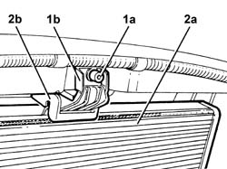
Applies to: engines: 1.6 TS ; all production periods
Lift up the radiator and remove it from the engine compartment.
Applies to: engines: 1.6 TS ; all production periods
Refitting
RemovingPosition the radiator inside the engine compartment and lower it slowly until it is resting on the base of the lower crossmember.
Position the flexible element on the top part of the radiator, fit the radiator mounting bracket and tighten the fixing bolt.
1088E10 radiator cooling fan - r + r
1088D14 upper sleeve for coolant inlet to radiator - r + r
1088D10 lower sleeve for coolant outlet from radiator - r + r
Supply the engine cooling system with the recommended fluid.
 | Type | Component | Name | Qty. |
|---|---|---|---|---|
- | Fluid | ENGINE COOLING CIRCUIT | Mixture 50% Paraflu11 for Alfa Romeo/distilled water | 6.9 |
7055B54 under-engine guard - r r
Connect the negative (-) battery terminal.
Remove the car from the ramps.
Applies to: engines: 2.0 JTS, 2.0 JTS; all production periods
Removing
RefittingPosition the vehicle on the ramp.
Ensure that the ignition key is in OFF position, then disconnect the negative battery terminal.
| Name | Connector |
|---|---|---|
- | Battery |
1. Disconnect the electrical connections from the engine cooling fan resistor.
| Name | Connector |
|---|---|---|
1 | Engine fan adjustment resistor - 1 |
2. Disconnect the electrical connection from the radiator cooling fan motor (2a) and release the electrical wiring from the band (2b).
| Name | Connector |
|---|---|---|
2a | Engine fan motor - 1 |
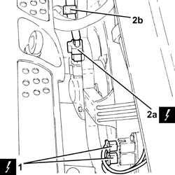
Applies to: engines: 2.0 JTS, 2.0 JTS; all production periods
Proceed with removal 7055B54 under-engine guard - r r .
1. Disconnect the lower coolant outlet hose from the radiator and drain the engine coolant.
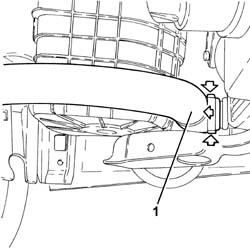
Applies to: engines: 2.0 JTS, 2.0 JTS; all production periods
1. Loosen band and disconnect the upper coolant inlet hose to the radiator, radiator side.
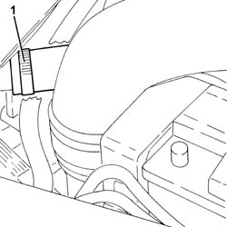
Applies to: engines: 2.0 JTS, 2.0 JTS; all production periods
Proceed with removal 7210E10 R.R. FRONT BUMPER .
1. Undo the upper bolt fixing the engine cooling radiator to the bodyshell.
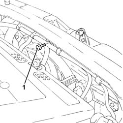
Applies to: engines: 2.0 JTS, 2.0 JTS; all production periods
1. Undo the bolts fixing the air duct to the engine cooling radiator.
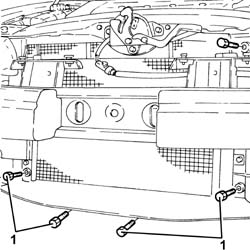
Applies to: engines: 2.0 JTS, 2.0 JTS; all production periods
1. Undo the bolts fixing the air conditioning system condenser to the engine cooling radiator.
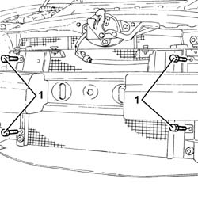
Applies to: engines: 2.0 JTS, 2.0 JTS; all production periods
1. Position a hydraulic jack under the radiator lower crossmember.
2. Undo the bolts securing the radiator bottom crossmember to the bodywork.
3. Lower the hydraulic jack and remove the lower radiator crossmember (3a), complete with engine cooling radiator (3b) and radiator cooling fan.
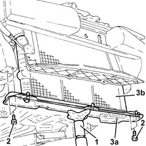
Applies to: engines: 2.0 JTS, 2.0 JTS; all production periods
Refitting
RemovingPlace the lower radiator crossmember complete with engine cooling radiator and radiator cooling fan back in its housing using the hydraulic jack.
Tighten the bolts securing the radiator bottom crossmember to the bodywork.
Remove the hydraulic jack from underneath the lower radiator crossmember.
Tighten the bolts fixing the air conditioning system condenser to the engine cooling radiator.
Release the air conditioning system condenser from the temporary fastening on the bodyshell.
Tighten the bolts fixing the air duct to the engine cooling radiator.
Tighten the upper bolt fixing the engine cooling radiator to the bodyshell.
Proceed with refitting 7210E10 R.R. FRONT BUMPER .
Connect the upper coolant inlet hose to the radiator, radiator side, and tighten the band.
Connect the rapid attachment for the bottom coolant outlet hose from the radiator.
Proceed with refitting 7055B54 under-engine guard - r r .
Connect the electrical connection to the radiator cooling fan motor and secure the electrical wiring to the band.
Connect the electrical connections to the resistor for the engine cooling fan.
Connect the negative (-) battery terminal.
Refill the engine cooling system with coolant 0010T20 coolant change .
Remove the car from the ramps.
Applies to: engines: 1.9 JTD 16v; all production periods
Removing
RefittingPosition the vehicle on the ramp.
Proceed with removal 1016A10 sound-proofing cover - r + r .
Ensure that the ignition key is in the OFF position, then disconnect the negative battery terminal (-).
| Name | Connector |
|---|---|---|
- | Battery |
Proceed with removal 7055B54 under-engine guard - r r .
Disconnect the coolant outlet hose from the radiator and drain the cooling system.
Proceed with removal 5530B10 battery - r+r .
Proceed with removal 5530B52 Battery DRIP TRAY/SUPPORT - R.R. .
Proceed with removal 1048A10 air cleaner filtering element - replace .
Proceed with removal 1088E10 radiator cooling fan - r + r .
Proceed with removal 7055A43 central front grille - r r .
Proceed with removal 7055A41 RIGHT FRONT GRILLE - R.R. .
Proceed with removal 7210E10 R.R. FRONT BUMPER .
Proceed with removal 1084C40 Air DUCT for engine oil cooling radiator - R.R . .
1. Undo the nut (1a) and remove the bracket (1b) complete with power assisted steering system heat exchanger pipe (1c) aside.
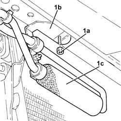
Applies to: engines: 1.9 JTD 16v; all production periods
1. Undo the bolts (1a) and remove the engine cooling radiator air duct (1b).
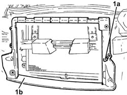
Applies to: engines: 1.9 JTD 16v; all production periods
Secure the air conditioning system condenser to the bodyshell.
1. Undo the bolts (1a) and remove the engine cooling radiator (1b).
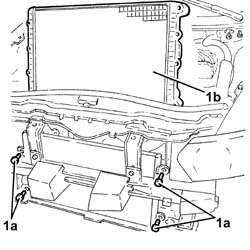
Applies to: engines: 1.9 JTD 16v; all production periods
Refitting
RemovingPlace the engine cooling radiator back in its housing and fix it using the bolts.
Release the air conditioning system condenser from the fastening on the bodyshell.
Fit the engine cooling radiator air duct in its seating and secure it with its bolts.
Place the bracket complete with power assisted steering system heat exchanger pipe back in its housing and fasten it using the nut.
Proceed with refitting 1084C40 Air DUCT for engine oil cooling radiator - R.R . .
Proceed with refitting 7210E10 R.R. FRONT BUMPER .
Proceed with refitting 7055A41 RIGHT FRONT GRILLE - R.R. .
Proceed with refitting 7055A43 central front grille - r r .
Proceed with refitting 1088E10 radiator cooling fan - r + r .
Proceed with refitting 1048A10 air cleaner filtering element - replace .
Proceed with refitting 5530B52 Battery DRIP TRAY/SUPPORT - R.R. .
Proceed with refitting 5530B10 battery - r+r .
Proceed with refitting 7055B54 under-engine guard - r r .
Refill the engine cooling system with coolant 0010T20 coolant change .
Connect the negative (-) battery terminal.
Proceed with refitting 1016A10 sound-proofing cover - r + r .
Remove the car from the ramps.
Applies to: engines: 2.4 JTD 20v; all production periods
Removing
RefittingPosition the vehicle on the ramp.
Proceed with removal 1016A10 sound-proofing cover - r + r .
Proceed with removal 1048A50 air inlet pipe to turbo charger - r + r .
Proceed with removal 5530B10 battery - r+r .
Proceed with removal 5530B52 Battery DRIP TRAY/SUPPORT - R.R. .
Proceed with removal 1048A10 air cleaner filtering element - replace .
Proceed with removal 1088E11 fans with single engine duct - r+r .
1. Disconnect the rapid connector and disconnect the lower radiator coolant outlet hose, radiator side.
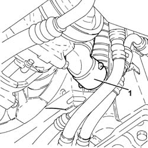
Applies to: engines: 2.4 JTD 20v; all production periods
Proceed with removal 7055A43 central front grille - r r .
Proceed with removal 7055A41 RIGHT FRONT GRILLE - R.R. .
Proceed with removal 7210E10 R.R. FRONT BUMPER .
Secure the air conditioning condenser in a suitable manner to the upper crossmember.
1. Undo the bolts securing the air conditioner condenser to the engine cooling radiator.
2. Unscrew the bolts securing the air duct to the radiator.
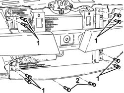
Applies to: engines: 2.4 JTD 20v; all production periods
1. Loosen band and disconnect the upper coolant inlet hose to the radiator thermostat side.
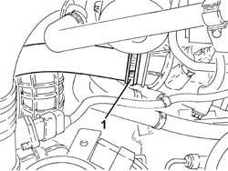
Applies to: engines: 2.4 JTD 20v; all production periods
1. Undo the bolt (1a) and remove the bracket (1b) with the upper engine cooling radiator fixing mounting (1c).
2. Remove the engine cooling radiator complete with hose, moving it upwards.
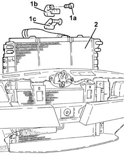
Applies to: engines: 2.4 JTD 20v; all production periods
Refitting
RemovingPlace the engine cooling radiator, complete with hose, back in its housing.
Refit the bracket with the upper engine cooling radiator fixing mounting and secure it with its bolt.
Connect the upper coolant inlet hose to the radiator, thermostat side, and tighten the band.
Tighten the bolts securing the air duct to the radiator.
Tighten the bolts securing the air conditioner condenser to the engine cooling radiator.
Proceed with refitting 7210E10 R.R. FRONT BUMPER .
Proceed with refitting 7055A41 RIGHT FRONT GRILLE - R.R. .
Proceed with refitting 7055A43 central front grille - r r .
Connect the rapid attachment for the lower coolant outlet hose from the radiator, radiator side.
Proceed with refitting 1088E11 fans with single engine duct - r+r .
Proceed with refitting 1048A10 air cleaner filtering element - replace .
Proceed with refitting 5530B52 Battery DRIP TRAY/SUPPORT - R.R. .
Proceed with refitting 5530B10 battery - r+r .
Proceed with refitting 1048A50 air inlet pipe to turbo charger - r + r .
Refill the engine cooling system with coolant 0010T20 coolant change .
Proceed with refitting 1016A10 sound-proofing cover - r + r .
Remove the car from the ramps.
Topics linked from this page (18)
- 0010T20 coolant change
- 1016A10 sound-proofing cover - r + r
- 1048A10 air cleaner filtering element - replace
- 1048A50 air inlet pipe to turbo charger - r + r
- 1084C40 Air DUCT for engine oil cooling radiator - R.R .
- 1088D10 lower sleeve for coolant outlet from radiator - r + r
- 1088D14 upper sleeve for coolant inlet to radiator - r + r
- 1088E10 radiator cooling fan - r + r
- 1088E11 fans with single engine duct - r+r
- 5530B10 battery - r+r
- 5530B52 Battery DRIP TRAY/SUPPORT - R.R.
- 7055A41 RIGHT FRONT GRILLE - R.R.
- 7055A43 central front grille - r r
- 7055B54 under-engine guard - r r
- 7210E10 R.R. FRONT BUMPER
- A1B Battery ( BATTERY NEGATIVE )
- N11 Engine fan motor - 1
- O10 Engine fan adjustment resistor - 1